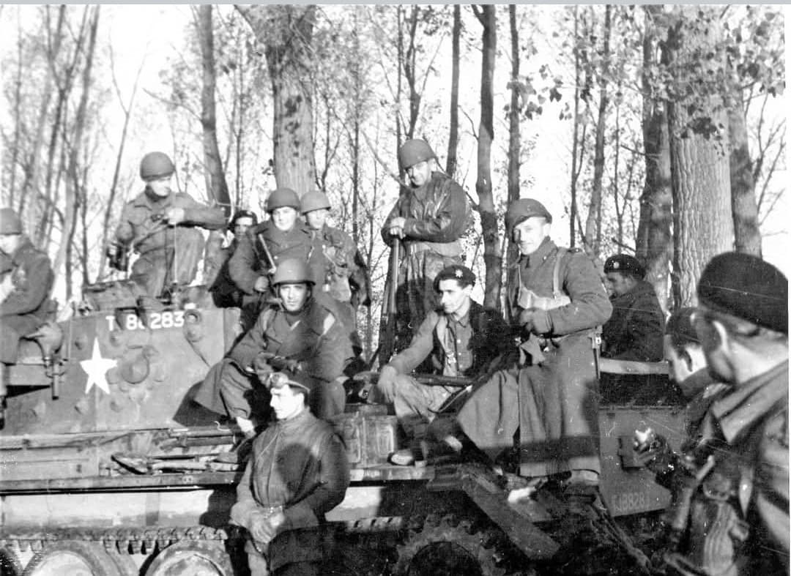
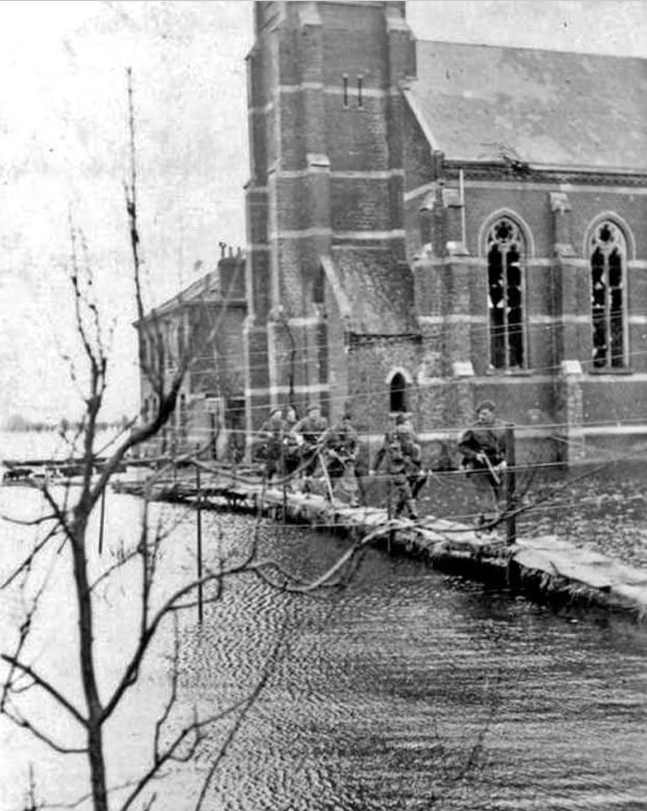
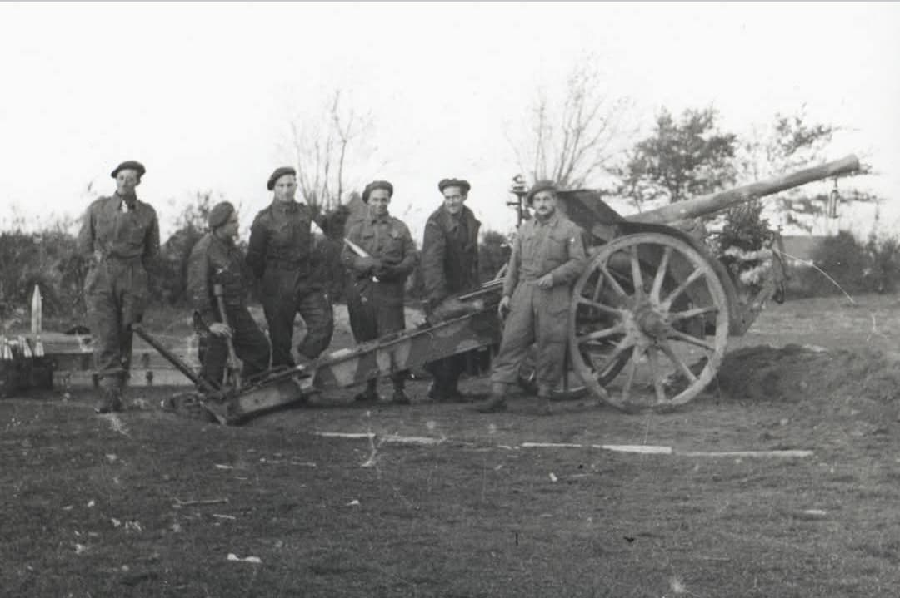
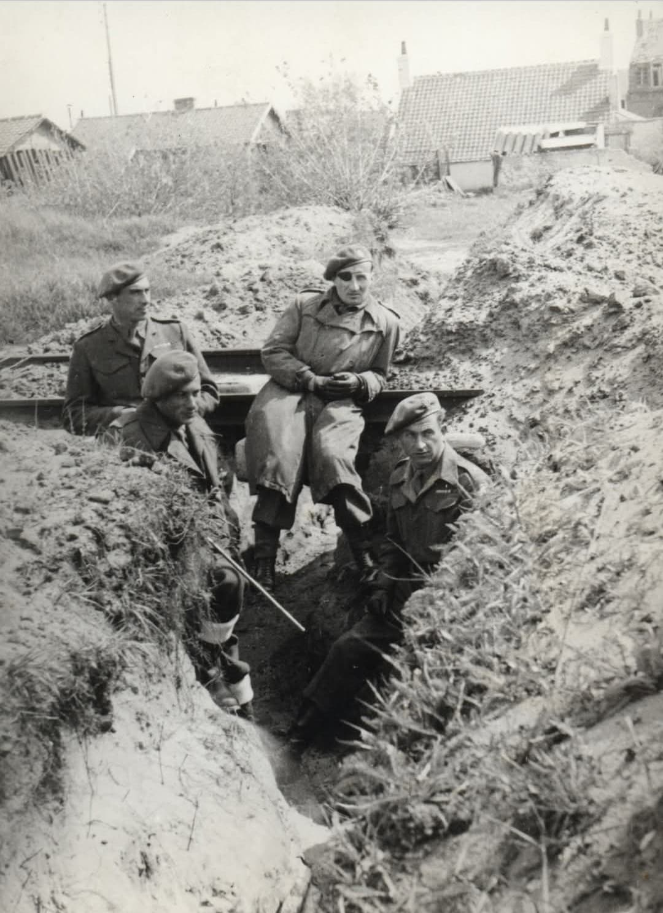
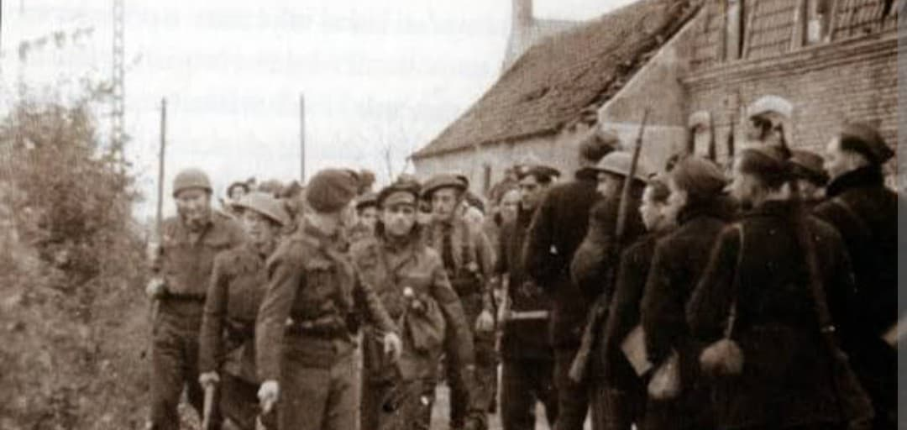
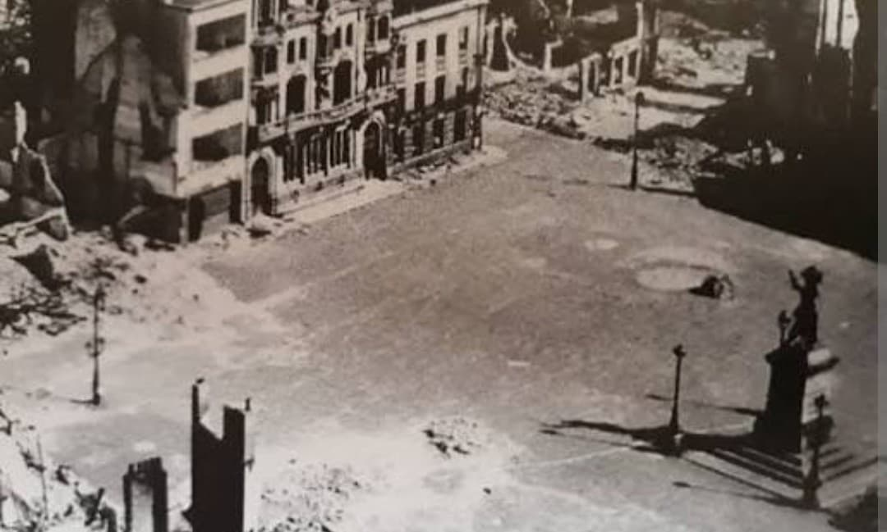
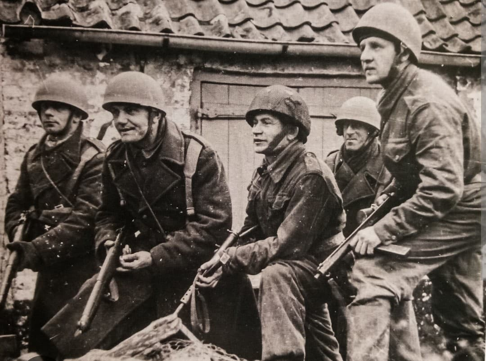

Contexte
En septembre 1944, les armées alliées libèrent presque toute la France. Mais Dunkerque, déjà ravagée par les bombardements de 1940 et 1944, reste aux mains des Allemands. La ville devient une forteresse isolée : la Festung Dunkerque.
Le général allemand Friedrich Frisius reçoit l’ordre de tenir la ville « jusqu’au dernier homme ». Dunkerque est encerclée, mais pas attaquée : les Alliés veulent avancer vers l’Allemagne, pas perdre du temps dans une ville détruite.

Les forces tchèques
Ce sont les troupes du général Alois Liška, appartenant à la 1re brigade tchécoslovaque, qui reçoivent la mission d’encercler Dunkerque. Elles coupent les routes, surveillent les mouvements et empêchent toute sortie allemande.
Leur objectif n’est pas de prendre la ville par la force, mais de bloquer la garnison allemande. Le siège commence : long, silencieux, implacable.

La forteresse allemande
Les Allemands disposent d’environ 10 000 hommes : soldats de la Wehrmacht, marins, unités côtières, et même des éléments de la Kriegsmarine. Ils sont bien retranchés, bien équipés, et déterminés à résister.
Dunkerque est protégée par des bunkers, des mines, des champs de tir et des positions fortifiées. Toute attaque frontale serait extrêmement coûteuse.

La vie dans la ville assiégée
Pour les civils restés dans Dunkerque, la situation est dramatique. La ville est déjà détruite à plus de 70 % depuis 1940. Les bombardements de 1944 ont achevé de ravager les quartiers restants.
Les habitants vivent dans les caves, les ruines, les abris improvisés. Le rationnement est extrême. L’eau manque. Les communications sont coupées. Dunkerque est isolée du monde pendant huit mois.

Combats autour de Dunkerque
Les Tchèques mènent des opérations régulières pour tester les défenses allemandes, détruire des positions, repousser des sorties et maintenir la pression. Les combats sont violents, mais limités : l’objectif est d’user la garnison, pas de lancer un assaut massif.
Les Allemands tentent parfois des sorties pour récupérer du matériel, capturer des vivres ou perturber les lignes alliées. Chaque escarmouche laisse des traces dans les dunes, les villages et les zones rurales autour de Dunkerque.

Une ville fantôme
Dunkerque est méconnaissable. Les rues sont éventrées, les bâtiments effondrés, les places désertes. La ville est une succession de ruines, de murs brisés, de façades béantes.
Les Tchèques observent cette cité détruite, silencieuse, figée dans la guerre depuis 1940. Le siège ne fait qu’ajouter une couche de souffrance à une ville déjà martyrisée.

Positions et surveillance
Les Tchèques installent des postes de surveillance dans les villages environnants, les fermes, les dunes et les zones rurales. Ils contrôlent les routes, surveillent les mouvements et empêchent toute tentative de sortie.

L’hiver du siège
L’hiver est terrible. Le froid, la faim, les maladies et l’isolement rendent la vie dans la Festung Dunkerque extrêmement difficile. Les civils souffrent, les soldats allemands s’épuisent, mais Frisius refuse toujours de se rendre.

La capitulation — 9 mai 1945
Le 8 mai 1945, l’Europe fête la victoire. Mais Dunkerque est encore occupée. Le général Frisius refuse de se rendre.
Le 9 mai 1945, il capitule enfin devant les forces tchèques. Dunkerque est libérée, un jour après le reste de l’Europe.